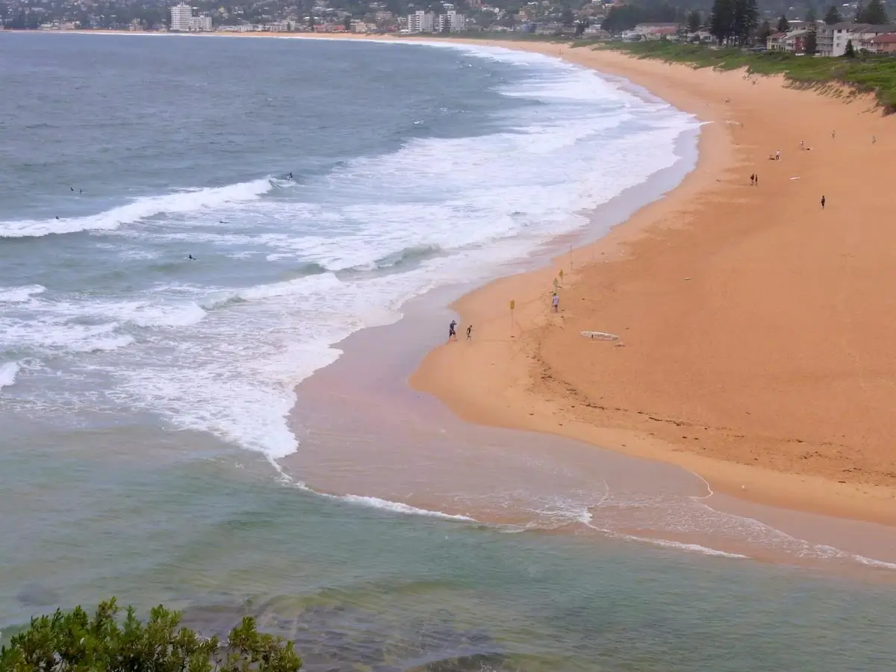

North Narrabeen
Sydney, Nouvelle-Galles du Sud, Australie · surf, bodyboard

Banc de sable réputé à l’embouchure de la lagune de Narrabeen, sur les plages du nord de Sydney. Les gauches et les droites y sont parmi les plus régulières de la ville, avec un niveau local élevé.
- Lieu
- Sydney, Nouvelle-Galles du Sud, Australie
- Niveau
- Intermédiaire
- Activités
- surf, bodyboard
- Type d'eau
- Mer / océan
- Coordonnées
- -33.71, 151.30 (position approximative du secteur)
Dangers à connaître
- Fort courant à la sortie de la lagune.
- Line-up dense et très local.
- Qualité de l’eau dégradée après la pluie.
Le conseil d'Ocean Buddy
Évite de surfer après de fortes pluies : la lagune se déverse dans l’océan et la qualité de l’eau baisse.
Ouvrir dans Ocean Buddy Télécharger sur l'App Store
Source : Fiche Ocean Buddy · septembre 2026 · à vérifier localement.